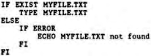

Scorpio News |
April–June 1987 – Volume 1. Issue 2. |
| Page 25 of 51 |
|---|
The need to be able make such modifications to the BIOS, and Cold Boot initialization routines again underlines the need for system suppliers to make the BIOS source code available to users.
Use of the external FCB releases more room in the CCP area for commands, and provides Z system utilities with a means of accessing the data and using it. Only 48 bytes are used by this buffer.
This area uses only 80 bytes, and the author of Z3 emphasizes the need to instal this feature if Z3 is to work properly. The area is used to convey system information between Z3 and utilities.
The shell stack uses 128 bytes of memory. Z3 supports the use of Shells, and the Shell Stack is necessary for this feature to be used.
I must admit to being unfamiliar with shells, and I quote from the Z3 documentation – ‘A Shell is a front end processor which is invoked in place of the Z3 CCP input routine, allowing command input to proceed in a variety of different, perhaps more user friendly ways.’. Programs that are configured as shells lie in memory rather like the layers in an onion – one above the other, rather than replacing one another, so that control can be passed from one to the other. Thus MENU, which is a shell can run another shell like VFILER. When VFILER is exited, control would revert to MENU.
This segment takes up 256 bytes of memory, but is essential if the Z system is to operate. It consists of two parts, each of which is allocated 128 bytes. One part describes the Z3 environment itself. It holds the addresses of all of the active segments and buffers so that Z3 and utilities know what is available and where to find it. It also contains some general data about Terminals and Printers, such as Screen Width, Screen Lines, Printer Width, Form Feed supported, and so on. Two terminals and four printers may be described.
The other part, called the TCAP – Terminal Capabilities, describes the special features of the system screen handling such as Cursor Key bytes, Cursor movement Byte string, Inverted Video Commands, Clear Screen and Line. These are then available to the Z system utilities, which can then use the features for better user interface. Z3 comes with a large library of Terminals described, but the Gemini IVC/SVC is not amongst them. It is quite easy to set up an ENV segment for any terminal however. There are over 80 bytes free in this part of the .ENV segment, which may be utilized in other ways, as suggested in the installation part of this article.
This is another area of Z3 that I have not yet investigated to any extent. This segment takes 512 bytes of memory. It provides a number of conditional commands like IF, ELSE, FI, XIF that allow command sequences to be conditional. A command like:

| Page 25 of 51 |
|---|